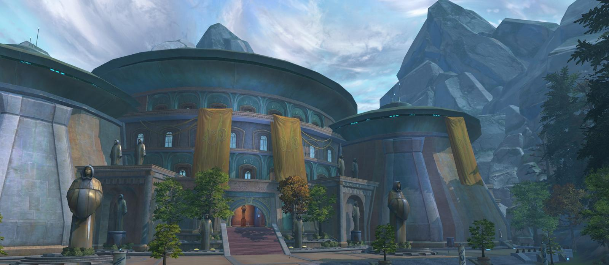

Opis: Świątynia Jedi na planecie Tython to miejsce, w którym narodziła się filozofia Jedi. Tython, znajdujący się w centrum galaktyki, jest planetą o silnym połączeniu z Mocą. Krajobraz Tythonu jest zdominowany przez góry, doliny i dwie satelity – Ashla (jasna strona) i Bogan (ciemna strona) – które odzwierciedlają dualizm Mocy.
Świątynia została zbudowana przez pierwszych użytkowników Mocy, którzy starali się zrozumieć tę mistyczną siłę i znaleźć równowagę między jej jasną i ciemną stroną. Jej architektura jest majestatyczna, ale zarazem prosta, odzwierciedlając pokorę i duchowy charakter Jedi. Wnętrze świątyni skrywa niezliczone holokrony, zapisy historii galaktyki i starożytne artefakty.
Znaczenie: Świątynia na Tythonie stanowi duchowy fundament Zakonu Jedi. To miejsce, gdzie młodzi Jedi uczyli się o znaczeniu harmonii, równowagi i odpowiedzialności za Moc. Jest to nie tylko kolebka wiedzy, ale też przypomnienie o tym, jak ważna jest równowaga w świecie.
 ➡